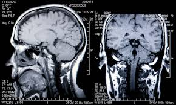

Project Overview
This research project developed a deep learning model capable of accurately classifying different stages of Alzheimer's disease from brain MRI images. The model was trained on a cohort of 400+ students and achieved significant improvements in diagnostic accuracy through innovative data augmentation techniques.
Project Visualizations

CNN Architecture
ResNet50-based neural network architecture with custom classification head.

MRI Sample Images
Brain MRI scans showing different stages of Alzheimer's progression.
Research Highlights
- ResNet50 Architecture: Leveraged transfer learning with ResNet50 for robust feature extraction
- Advanced Augmentation: Implemented sophisticated data augmentation for model robustness
- Large-Scale Training: Trained on 400+ student cohort dataset
- AAIC Presentation: Research presented at Alzheimer's Association International Conference 2025
- Peer-Reviewed Publication: Findings published in medical journal
- HPC Computing: Utilized Polaris high-performance computing for training